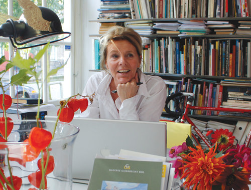

box = page['Main']['Content']
Petr van Blokland
Petr van Blokland (1956, Netherlands) graduated cum laude from the graphic arts program at the Royal Academy of Fine Arts (KABK) in The Hague in 1980.
With his partner Claudia Mens, Van Blokland worked for over thirty-five years as a designer in the studio they cofounded. His output ranged from sketching and model-making to programming in various languages. He specialized in systematic design: corporate identities, form systems, online publications, and tools for type design.
Van Blokland has taught graphic design, typography, and type design for many years at the Royal Academy of Fine Arts (KABK) in The Hague and at the Academy of Fine Arts, Arnhem. His first typeface was Proforma, a large series commissioned by Purup, a Danish manufacturer of form-preparation systems. Proforma has now been released for general use through Type Network. In 1988, Van Blokland’s work brought him ATypI’s coveted Charles Peignot Prize.
As cofounder and partner of Type Network, Van Blokland is a dedicated contributor and developer of new type and tools for type design. He currently teaches in the Master’s program in Graphic Design at AKV|St.Joost in Breda and at Type and Media, the postgraduate type design program at KABK in The Hague. Read more about his thoughts on design and education in this interview and in his Lubalin lecture, Words delivered at Cooper Union in 2015.
page = doc.newPage(title='About', name='about.html', template='home')
page.info.cssPath = 'sources/pagebot.css'
box = page['Main']['Side']

box = page['OtherMain']['Content']
Claudia Mens
After three decades, running a studio from 1980 till 2010, it was time for something else. Claudia went looking and longing for the woods of her childhood. She found that feeling back on Martha's Vineyard in the USA, where she began drawing with childlike pleasure and painting. Arose leafs and fern motifs, inspired by her travels in Africa, South America and Asia.
She designed a series of scarves with type and motifs of leafs, produced by NGO Kumudini Welfare Trust in Bangladesh. In 2016, she started with a lot of spirit and fun Pepper+Tom.
Besides the products of Pepper+Tom, similar to work in all of the photo's on this website, design can be made by Claudia as a special custom assignment. Ask her: claudia@petr.com
and others…
Depending on required domain knowlegdge, other designers and professionals can be added to the team. Former students, collegue designers and lectureres and relations of the studio are available if necessary.
box = page['OtherMain']['Side']
